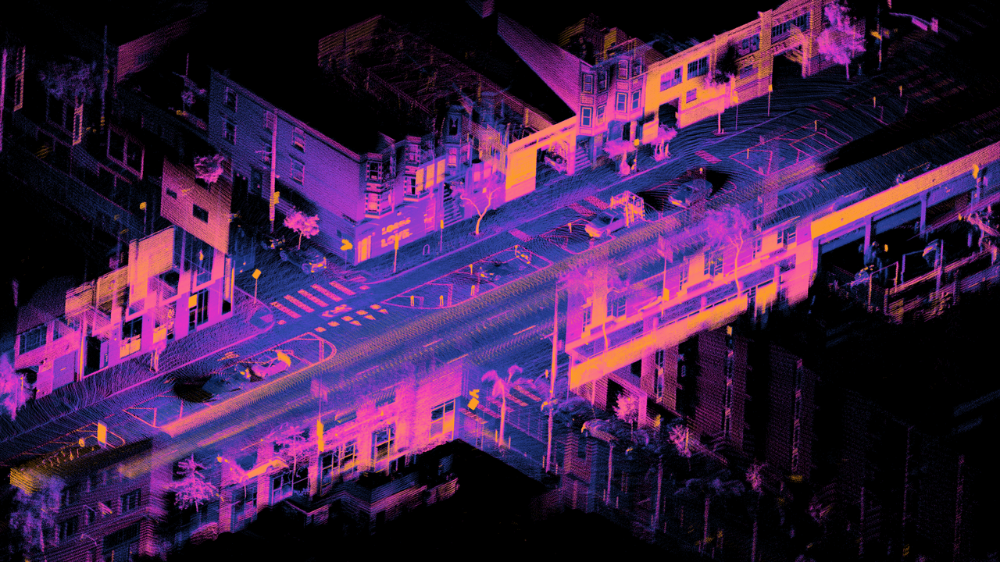

01MSc thesis · 2025—26
Real-Time 3D Perception for Autonomous Ground Vehicles
A training-free pipeline combining YOLOv8m-seg, calibrated LiDAR projection, adaptive mask erosion, DBSCAN clustering, and PCA-based 3D bounding boxes for KITTI scenes.
YOLOv8m-seg→LiDAR projection→DBSCAN→3D OBB
0 / 0Car / pedestrian IoU on KITTI0with 1,874 MiB GPU memory
PythonPyTorchOpen3DYOLOv8
View repository